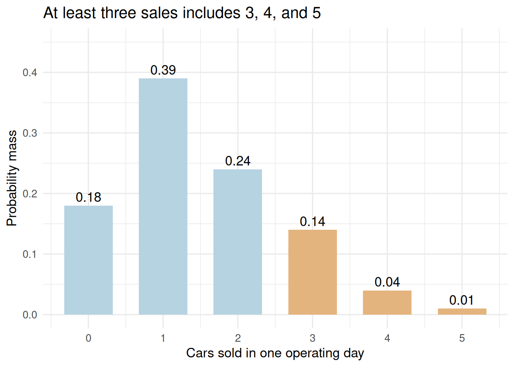

# library(): loads a package so its functions can be used in this session.
# data.frame(): builds a table whose named columns have compatible lengths.
# c(): combines values into a vector, converting them to a common type when needed.
# sum(): adds vector entries; on logical values it counts TRUE entries.
# stopifnot(): stops execution if any supplied condition is FALSE; successful checks produce no output.
# all(): returns TRUE only when every supplied logical value is TRUE.
# abs(): returns absolute values; a small tolerance in an equality check permits floating-point rounding.
# theme_set(): sets the default theme for subsequent ggplot charts in this R session.
# theme_minimal(): uses a minimal chart style; base_size controls the base text size in points.
# Enter the six published frequency cells from textbook p.222; do not expand them into invented days.
# Dividing by 300 creates the probability mass function verified against Table 5.4, p.223.
library(ggplot2)
library(knitr)
sales <- data.frame(Cars = 0:5, Days = c(54, 117, 72, 42, 12, 3))
sales$Probability <- sales$Days / sum(sales$Days)
stopifnot(sum(sales$Days) == 300,
all(abs(sales$Probability - c(.18, .39, .24, .14, .04, .01)) < 1e-12))
theme_set(theme_minimal(base_size = 13))Module 3: Discrete Random Variables
Lesson 3 | Turn outcomes into a probability distribution
What we will learn
A random variable assigns a numerical value to each outcome of an experiment. Uppercase \(X\) denotes the variable before the outcome is known; lowercase \(x\) denotes a possible value.
By the end, you should be able to construct a discrete probability mass function, calculate event and cumulative probabilities, and interpret expected value and variance.
Reading: main textbook, §§5.1–5.3, printed pp.218–228; DiCarlo Motors, pp.222–223 and Tables 5.4–5.6, pp.223, 227–228. Bivariate portfolio distributions in §5.4 are outside this module’s selected sequence.
Business case: daily sales at DiCarlo Motors
The book describes 300 operating days at DiCarlo Motors in Saratoga, New York. The numbers of days with 0, 1, 2, 3, 4, and 5 cars sold were 54, 117, 72, 42, 12, and 3, respectively. Let \(X\) be the number of cars sold on a day. How likely is a day with at least three sales, and what sales level should be expected on average? One observational unit is one operating day. Only the published frequency summary is available here; the original sequence of daily observations is not supplied.
يصف الكتاب ثلاثمئة يوم عمل في معرض DiCarlo Motors في ساراتوغا بولاية نيويورك. كانت أعداد الأيام التي بيعت فيها 0 و1 و2 و3 و4 و5 سيارات هي 54 و117 و72 و42 و12 و3 على الترتيب. ليكن المتغير \(X\) عدد السيارات المبيعة في يوم واحد. ما احتمال بيع ثلاث سيارات على الأقل في اليوم، وما متوسط المبيعات المتوقع؟ الوحدة المشاهدة هي يوم عمل واحد. المتاح هنا هو ملخّص التكرارات المنشور فقط، ولا يتوافر الترتيب الأصلي للمشاهدات اليومية.
Discrete values and a probability mass function
\(X\) is discrete: its possible values form a finite or countable set. Sales of 1.5 cars cannot occur on a single day. Flight duration is continuous in the model because it can vary over an interval, even if a measurement is rounded to minutes.
The probability mass function is
\[p(x)=P(X=x),\qquad p(x)\geq0,\qquad\sum_x p(x)=1.\]
# stopifnot(): stops execution if any supplied condition is FALSE; successful checks produce no output.
# all(): returns TRUE only when every supplied logical value is TRUE.
# abs(): returns absolute values; a small tolerance in an equality check permits floating-point rounding.
# sum(): adds vector entries; on logical values it counts TRUE entries.
# Each row is a published sales-count category, not an individual day or a newly created record.
# The probability column sums to one; kable() prints the six-cell summary.
stopifnot(all(sales$Probability >= 0), abs(sum(sales$Probability) - 1) < 1e-12)
kable(sales, digits = 2)| Cars | Days | Probability |
|---|---|---|
| 0 | 54 | 0.18 |
| 1 | 117 | 0.39 |
| 2 | 72 | 0.24 |
| 3 | 42 | 0.14 |
| 4 | 12 | 0.04 |
| 5 | 3 | 0.01 |
For uniform selection of one of the 300 recorded days, these relative frequencies give exact selection probabilities. Using them for a future day is an empirical probability model that assumes those historical days remain relevant. It does not establish that more than five cars can never be sold in future operations.
# ggplot(): starts a plot from data; additional layers are joined with +.
# aes(): maps variables to visual properties such as x, y, fill, color, or group.
# geom_col(): draws bars at supplied heights; it does not count records.
# geom_text(): draws labels from mapped data; position and hjust/vjust control placement.
# sprintf(): formats text using placeholders such as %.2f for two decimal places.
# scale_fill_manual(): assigns explicit fill colors to categories; named values preserve category-color mappings.
# c(): combines values into a vector, converting them to a common type when needed.
# scale_x_continuous(): controls numeric x-axis breaks, labels, limits, and spacing.
# scale_y_continuous(): controls numeric y-axis breaks, labels, limits, and spacing.
# labs(): sets axis titles, legend titles, plot titles, and captions.
# Highlight the possible values in the event X >= 3; the event probability is their summed mass.
# Bars are separated because X takes integer counts; labels give the probability at each count.
ggplot(sales, aes(Cars, Probability, fill = Cars >= 3)) +
geom_col(width = 0.65) +
geom_text(aes(label = sprintf("%.2f", Probability)), vjust = -0.4) +
scale_fill_manual(values = c("#B6D3E1", "#E4B47E"), guide = "none") +
scale_x_continuous(breaks = 0:5) +
scale_y_continuous(limits = c(0, 0.45)) +
labs(x = "Cars sold in one operating day", y = "Probability mass",
title = "At least three sales includes 3, 4, and 5")
Original R chart of the six probabilities in textbook Table 5.4. Orange bars identify the event; they do not represent additional observations.
Events and the cumulative distribution
Sum masses at all values in the event:
\[P(X\geq3)=p(3)+p(4)+p(5)=0.19.\]
The cumulative distribution function, or CDF, is \(F(t)=P(X\leq t)\). It accumulates probabilities up to and including its argument. For an integer-valued \(X\),
\[P(X>k)=1-F(k),\qquad P(X\geq k)=1-F(k-1).\]
# kable(): formats a data frame or matrix as a readable report table; digits sets displayed precision.
# c(): combines values into a vector, converting them to a common type when needed.
# sum(): adds vector entries; on logical values it counts TRUE entries.
# cumsum() accumulates mass in increasing Cars order to obtain F(x) = P(X <= x).
# Indexing by a condition selects all mass values in an event before summing them.
sales$CDF <- cumsum(sales$Probability)
kable(sales[c("Cars", "Probability", "CDF")], digits = 2)| Cars | Probability | CDF |
|---|---|---|
| 0 | 0.18 | 0.18 |
| 1 | 0.39 | 0.57 |
| 2 | 0.24 | 0.81 |
| 3 | 0.14 | 0.95 |
| 4 | 0.04 | 0.99 |
| 5 | 0.01 | 1.00 |
c("Exactly three" = sum(sales$Probability[sales$Cars == 3]),
"At least three" = sum(sales$Probability[sales$Cars >= 3]),
"More than three" = sum(sales$Probability[sales$Cars > 3])) Exactly three At least three More than three
0.14 0.19 0.05 “Exactly three” has probability 0.14; “at least three” has probability 0.19; “more than three” has probability 0.05. Draw or list the included values before choosing a formula.
Expected value and variability
The expected value is a probability-weighted mean:
\[\mu=E(X)=\sum_x x p(x).\]
For this distribution, \(E(X)=1.50\) cars per day. This is an average over repetitions under the model, not a possible single-day sales count, a guaranteed forecast, or the most probable value. The mode is 1 car, whose probability is 0.39.
The variance and standard deviation summarize dispersion around the model mean:
\[\operatorname{Var}(X)=\sum_x(x-\mu)^2p(x),\qquad \sigma=\sqrt{\operatorname{Var}(X)}.\]
# kable(): formats a data frame or matrix as a readable report table; digits sets displayed precision.
# data.frame(): builds a table whose named columns have compatible lengths.
# c(): combines values into a vector, converting them to a common type when needed.
# stopifnot(): stops execution if any supplied condition is FALSE; successful checks produce no output.
# abs(): returns absolute values; a small tolerance in an equality check permits floating-point rounding.
# sum(x*p) and sum((x-mu)^2*p) use probability weights, not the sample n-1 correction.
# sqrt() returns SD in cars per day; variance is in squared cars for the daily count.
mu <- sum(sales$Cars * sales$Probability)
variance <- sum((sales$Cars - mu)^2 * sales$Probability)
kable(data.frame(Measure = c("Expected cars per day", "Variance", "SD"),
Value = c(mu, variance, sqrt(variance))), digits = 4)| Measure | Value |
|---|---|
| Expected cars per day | 1.500 |
| Variance | 1.250 |
| SD | 1.118 |
stopifnot(abs(mu - 1.5) < 1e-12, abs(variance - 1.25) < 1e-12)Do not apply var(sales$Cars) to obtain this model variance: that would weight the six possible values equally and apply a sample correction. It ignores the given probabilities.
For 30 operating days with the same daily expected value, expected total sales are \(30(1.5)=45\) cars. Linearity of expectation does not require independence. Calculating the variance of the total as 30 times the daily variance would additionally require zero covariance between daily counts; independence would be sufficient.
Summary: a distribution is more than its mean
| Question | Use | DiCarlo answer |
|---|---|---|
| What values are possible in the stated model? | Support | 0–5 cars |
| What is most probable? | Mode | 1 car |
| How likely are at least three sales? | Sum the relevant masses | 0.19 |
| What average does the model imply? | Expected value | 1.50 cars/day |
| How variable is the daily count? | Model SD | About 1.118 cars |
Complete Lesson 3 practice, then continue to binomial and Poisson models.
Sources and limits
Anderson et al. (2020), 8th ed., §§5.1–5.3. The six aggregate counts were transcribed from printed p.222 and checked against all six probabilities in Table 5.4, p.223; mean 1.50 and variance 1.25 match Tables 5.5–5.6, pp.227–228. These are published aggregate inputs, not a converted workbook or a 300-row daily dataset. No day ordering, dates, current sales conditions, or independent-day assumption is established by the summary.